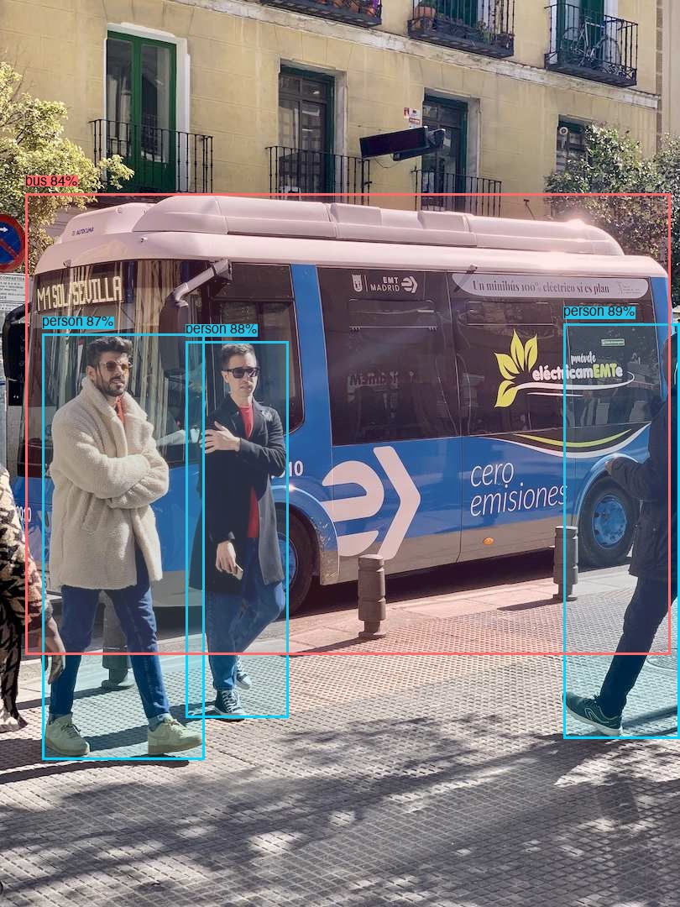
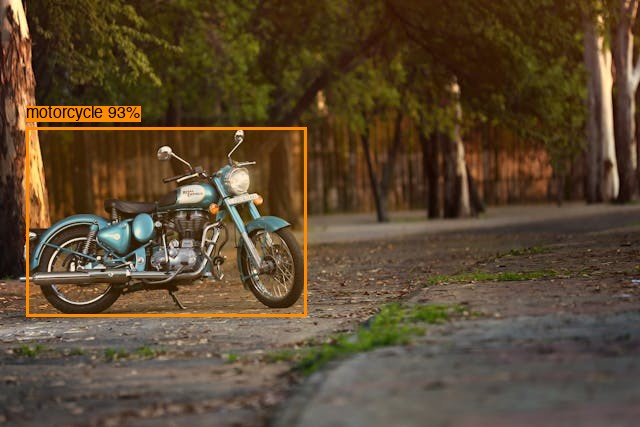
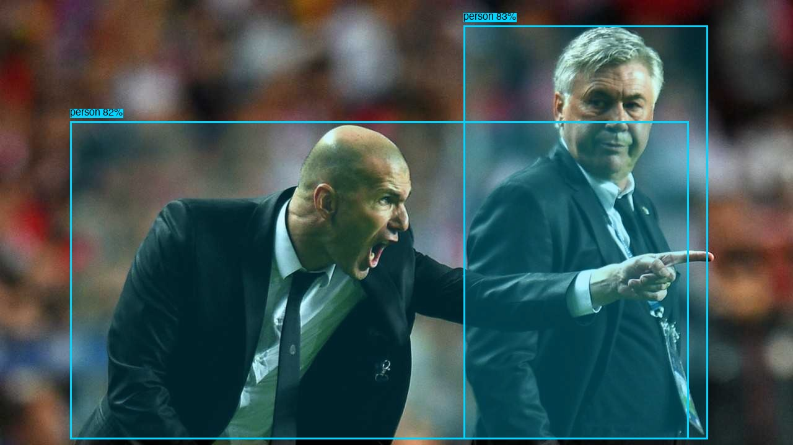
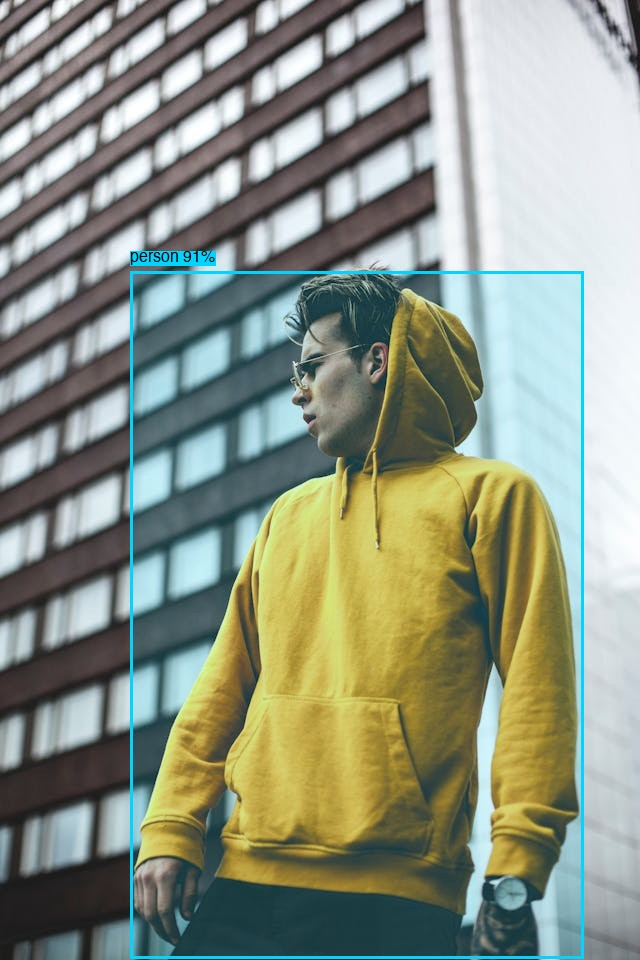
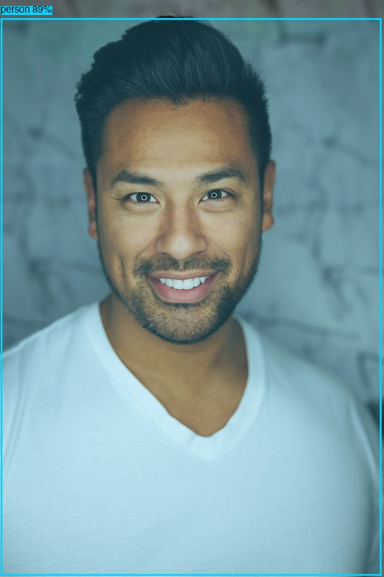

High-performance AI engine for object detection, scene analysis, and visual understanding. Built with Rust for speed, powered by ONNX Runtime.
From install to analysis in two commands - model auto-downloads on first use
Install the CLI and start analyzing. The default model auto-downloads on first use - no setup required.
Or download directly from GitHub Releases
Run object detection on your images. The trained Artifactiq model downloads automatically from GitHub releases on first run.
Pin model versions and customize settings via config file for reproducible deployments.
[model] version = "v5.0.0" # Pin to specific version update_policy = "check" # manual, check, or auto [engine] min_confidence = 0.5 device = "auto" # auto, cpu, cuda, mps
Override the default model with any ONNX file, Artifactiq version, or Axon-managed models.
Real object detection results from YOLOv8 with bounding boxes
Process entire directories of images with a single command. Now with WebP support!
E7 (v5.0.0) achieves 4.6x mAP50 improvement over E2 baseline through optimized shard-based training (46 shards x 3 epochs). Now the default model. View transparent comparison →
| Model | mAP50 | Recall | Training | Notes |
|---|---|---|---|---|
| E7 (v5.0.0) | 0.145% | 4.2% | 46 shards x 3 epochs | 68K images, 4.6x better than E2 |
| E2 (baseline) | 0.032% | - | 22 shards x 1 epoch | Previous best before E7 |
| E6 (regressed) | 0.017% | - | 46 shards x 1 epoch | 1 epoch per shard = regression |
| Stock YOLOv8n | 0.22% | 1.12% | COCO pretrained | 80 classes, no domain fit |





Artifactiq uses YOLOv8 models to detect 80+ object classes with high accuracy. The detection pipeline is optimized for both speed and precision.
{
"detections": [
{"class": "person", "confidence": 0.893},
{"class": "person", "confidence": 0.881},
{"class": "person", "confidence": 0.868},
{"class": "bus", "confidence": 0.838}
],
"processing_time_ms": 42
}
v1.1.0 trained with Apple Create ML - 101K iterations on M4 Max GPU
The v1.1.0 model was trained using Apple Create ML on M4 Max, leveraging the 40-core GPU for accelerated training. Perfect for iOS/macOS deployment.
v1.1.0 custom model is currently CoreML-only (macOS/iOS). Cross-platform ONNX export is on the roadmap. Use --coreml flag with the CLI on Apple Silicon.
Enterprise-grade visual AI capabilities with minimal resource footprint
YOLOv8-powered detection with support for 80+ object classes. Real-time performance with configurable confidence thresholds.
CLIP-based scene understanding for context-aware image analysis. Tourism, retail, and general scene classification.
Hardware-accelerated inference with ONNX Runtime. CPU, GPU, and Apple Silicon optimizations out of the box.
Written in Rust for memory safety and blazing-fast performance. Zero garbage collection pauses.
Seamless model management with mlOS Axon. Auto-download and cache YOLOv8 variants and custom ONNX models.
Powerful command-line interface with JSON output. Also available as a Rust library for integration.
Visual intelligence for every application
Identify products, brands, and merchandise in images. Perfect for catalog management and visual search.
Recognize landmarks, attractions, and points of interest. Build smart travel and tourism applications.
Real-time object and person detection for security monitoring and automated alerting systems.
Visual perception for autonomous systems. Identify objects, obstacles, and navigation targets.
We build and maintain tools for the ML community
Apple Silicon GPU monitor for ML training. Track GPU utilization, memory, and training progress in real-time. Supports Create ML, PyTorch, and HuggingFace.
Live training monitor on Apple M4 Max
Install Artifactiq and start analyzing - the model downloads automatically